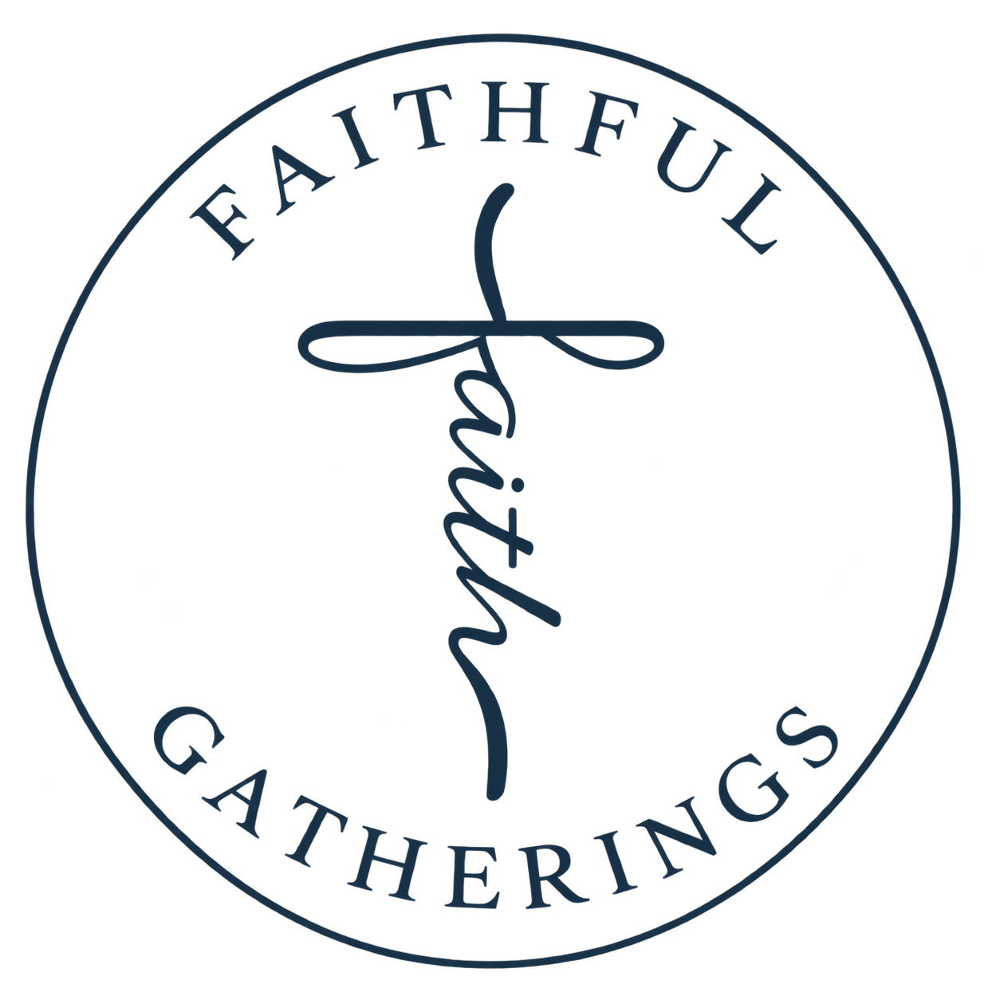

01
01Wedding planning
A wedding you’ll always remember, with a budget you can feel good about. We focus on what matters to you and find thoughtful ways to bring it to life.
Plan your wedding ↗
FAITHFULMEANINGFUL CELEBRATIONS. REAL-LIFE BUDGETS.
A beautiful wedding shouldn’t mean breaking the bank. Thoughtful planning, a personal touch, and a heart rooted in faith — all built around your budget.
Let’s plan something beautiful ↗ A little faith. A lot of love.
A little faith. A lot of love.01 / HOW WE BRING IT TO LIFE
From the first idea to the finishing details, we help you decide where to spend, where to simplify, and how to make your celebration feel like you.
01A wedding you’ll always remember, with a budget you can feel good about. We focus on what matters to you and find thoughtful ways to bring it to life.
Plan your wedding ↗ 02
02Corporate gatherings and personal celebrations, brought to life with the same care, creativity, and attention to detail.
Bring people together ↗ 03
03Creative details and personal touches that make your gathering feel beautifully your own. Thoughtful design can make a meaningful impression without overspending.
Find your vision ↗02 / THE HEART BEHIND THE GATHERING
At Faithful Gatherings, we start by listening. Your ideas, your priorities, your budget — they’re the foundation of a celebration that belongs to you.
Whether you have every detail imagined or are looking for a place to begin, we help turn those ideas into a cohesive, personal experience. Our heart is simple: to craft timeless moments, rooted in faith. A meaningful wedding is about your commitment and the people beside you. We believe it should be within reach.
Tell us what you’re dreaming of ↗03 / FROM AN IDEA TO “I DO”
A thoughtful path from your first inspiration to a gathering filled with moments that matter.
Tell us about your occasion, what matters most, and the budget you have in mind.
Together, we prioritize the details you love and explore practical choices that respect your budget.
With a thoughtful plan in place, your celebration comes together with care and intention.
LET’S MAKE SOMETHING MEANINGFUL
Have a date, a dream, or a budget you’re trying to make work? You don’t need to have it all figured out. Let’s start there.
Website preview: this inquiry builder prepares a message for you to copy. Online delivery will be enabled when the business contact details are confirmed.